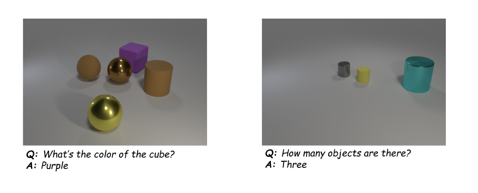
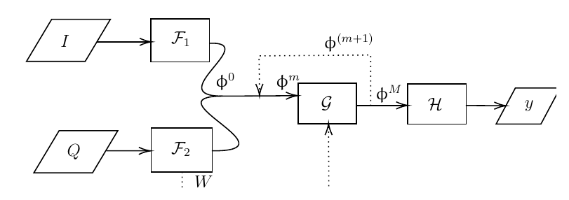
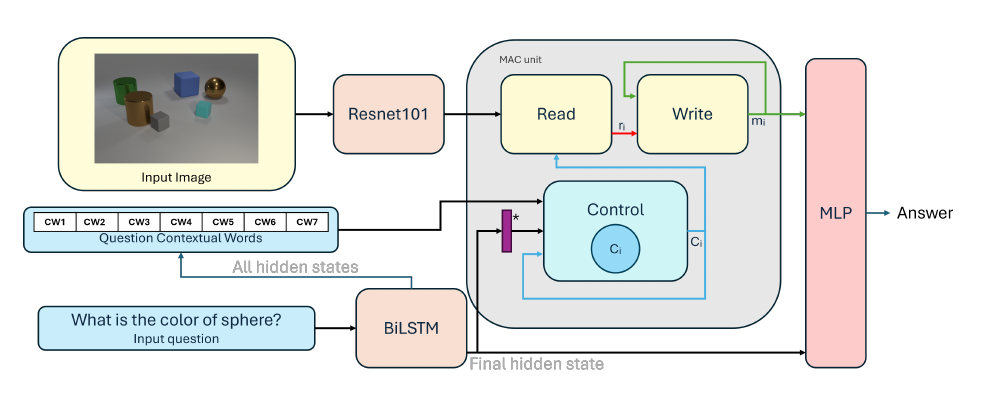
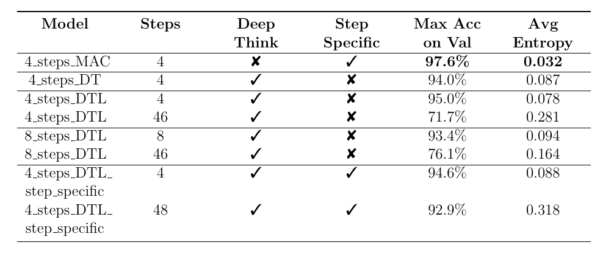
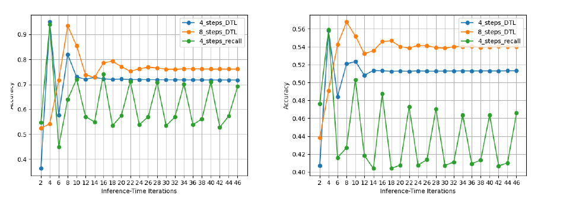
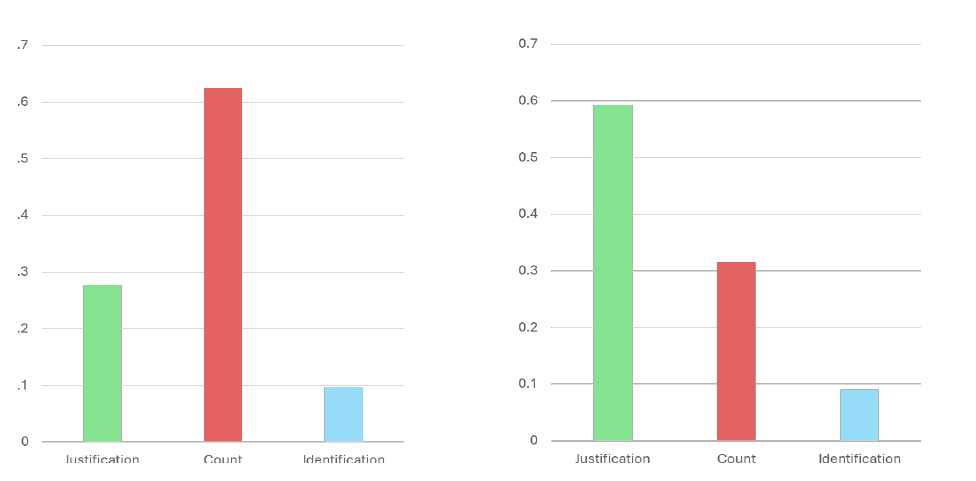
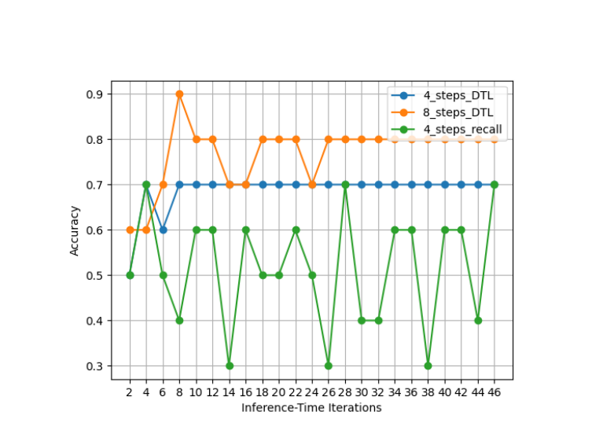

CLEVR Visual Question Answering (MAC-DTL)
This research project explored whether Deep Thinking style recurrent reasoning can improve extrapolation in visual question answering. The core idea was to combine the modular MAC network with an iteratively applied reasoning loop, creating MAC-DTL for controlled experiments on CLEVR, CLEVR-Human, and a custom CLEVR-Hard question set.
Project Overview

Technical Approach
The model keeps MAC's Control, Read, and Write reasoning units, but adapts them into a recurrent function that can be reused across inference steps. A frozen ResNet101 image encoder and learnable BiLSTM question encoder provide the visual and language representations, while spectral normalisation is applied to linear layers to encourage 1-Lipschitz-style stability during extended reasoning.
- Compared original MAC, MAC-DT, MAC-DTL, 4-step and 8-step variants, and a step-specific Control Unit variant.
- Evaluated both standard accuracy and prediction entropy to measure confidence under longer inference loops.
- Analysed extrapolation using CLEVR-Human, short-to-long question splits, and manually designed CLEVR-Hard questions.


Key Results


Findings
MAC-DTL showed that Deep Thinking and MAC are architecturally compatible, especially when spectral normalisation is used to reduce unstable memory updates. The strongest benefit was improved inference-time stability rather than a clear peak-accuracy gain. Extended reasoning also exposed an important limitation: extra iterations can increase uncertainty and overthinking, especially on simpler yes/no reasoning, while counting errors often came from occlusion and object-boundary ambiguity.


Takeaway
The project frames MAC-DTL as a lightweight and interpretable alternative to large end-to-end transformer VQA systems. It balances training efficiency, modular reasoning, and stability analysis, while also showing that extrapolation in VQA needs more careful definitions than simply increasing reasoning depth.